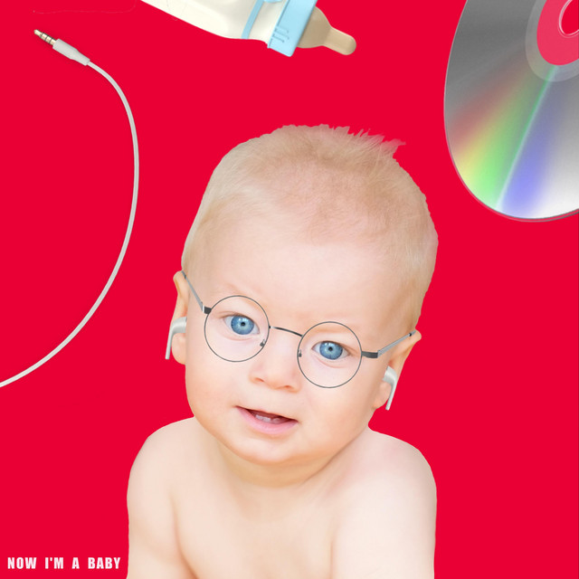

Garrett Watts az egy 29 éves, amerikai YouTuber. Számos érdekes és szórakoztató videó található a csatornáján és jó barátja Shane Dawson, 30 éves YouTuber, videóiban is sokat szerepel. Egy végtelen kedvességgel rendelkező személyiség. Mindig humoros és egy igazán szerethető személyiség.
Now I'm a Baby

A single album borítója.
Február 26-án Garrett feltöltött egy videót amiben 24 óra alatt kísérelt megírni egy dalt. Át szerette volna élni a zeneírás folyamatát. A szám "Now I'm a Baby" minden platformon elérhető, én magam meg is vásároltam iTunes-on. Ahhoz képest, hogy nem ért a zeneíráshoz, nagyon jó lett a szám.